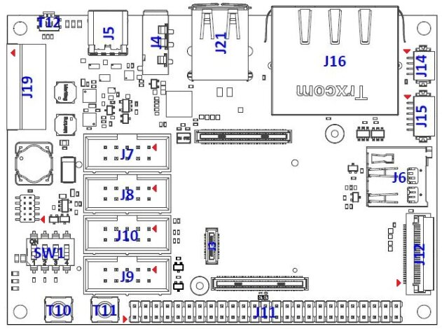
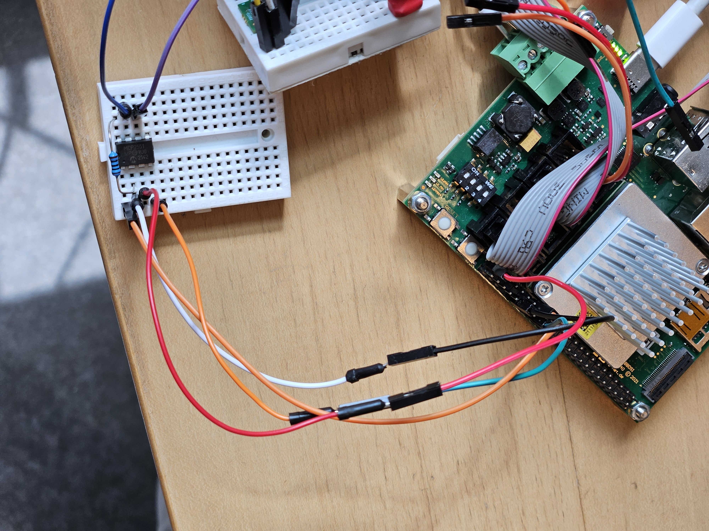

System setup
The camera control software, image processing pipeline and scheduler run on a PicoCore™MX8MP computer on module (CoM). The source code and build setup as well as compiled binaries for the system image etc. are available on https://github.com/discosat/disco-ii-picocore-mx8mp-yocto.
Serial connection to the CoM
To access the bootloader and/or Linux command line, you must establish a serial connection with a baud rate of 115200 to the board over UART_A. This can be done by connecting a USB to Serial UART adapter to your laptop (such as a FT232RL breakout board) and attaching the TX, RX and GND pins to the following pins on the J9 connector of the PicoCoreBBDSI baseboard:
J9 pin |
USB <-> Serial UART |
|---|---|
3 |
TX |
5 |
RX |
9 |
GND |
 Connector layout of the baseboard. Pin 1 is marked with a small red arrow. Source: F&S Embedded Baseboard Hardware Documentation
Or alternatively connecting TX, RX and GND to the following pins on the (…) connector of the custom DISCO II PCB: (TODO once PCB is finalized…)
You can then open a serial connection from your computer to the CoM to access U-Boot/Linux. E.g. if you’re running Linux and the USB to Serial adapter is exposed on device file /dev/ttyUSB0, you can run screen /dev/ttyUSB0 115200 to open the connection - and there are many other alternatives to screen as well if you prefer to use a different utility. You may need to run something like sudo chmod 666 /dev/ttyUSB0 first to avoid permission errors.
The system auto-boots into Linux, but if you’ve ended up in U-Boot, you can run boot to boot up the Linux kernel, after which you can log into the root user (with no password).
UART device mapping
Function |
Device file |
UART name |
Device tree name |
|---|---|---|---|
Cortex-M7 debug |
|
UART_C |
|
U-Boot & Linux command line |
|
UART_A |
|
- |
|
UART_D |
|
RS485 / CSP KISS interface |
|
UART_B |
|
Flash the system image onto the payload CoM
Download or follow the instructions in the discosat/disco-ii-picocore-mx8mp-yocto repository to build the system image and related files. The resulting files are packaged in a way that are easily flashed onto the CoM by cleverly utilizing the default U-Boot setup on the CoM. Simply move these files to the root directory of a portable storage medium like a USB flash drive or an SD card and plug it into the CoM. After this, power on the CoM and you should eventually see something similar to the following being transmitted on UART_A:
Loading /update.scr ... done!
Loaded!
switch to partitions #0, OK
mmc2(part 0) is current device
Loading /emmc-fsimx8mp.sysimg ... done!
14680064 bytes read in 515 ms (27.2 MiB/s)
MMC write: dev # 2, block # 0, count 28672 ... 28672 blocks written: OK
Loading /emmc-fsimx8mp.sysimg ... done!
14680064 bytes read in 518 ms (27 MiB/s)
(...)
MMC write: dev # 2, block # 2924544, count 20628 ... 20628 blocks written: OK
Configuring Cortex-M7 core boot
Saving Environment to MMC... Writing to MMC(2)... OK
Installation complete
---- update COMPLETE! ----
After this, everything is good to go 🚀 You can then run the boot command in U-Boot, which boots up the auxiliary Cortex-M7 core and starts the linux kernel. See also the app-sys-manager page for an overview of the CSP nodes that are in this system.
Connecting to CAN peripherals on the PicoCoreBBDSI baseboard
We are using 2 separate CAN peripherals on the PicoCoreMX8MP. CAN_A is used for the Cortex-M7 core while CAN_B is used for the Cortex-A53 cores and all applications running in Linux (camera control, image processing, app-sys-manager).
CAN_A exposes CAN Low and CAN High bus lines directly on pins 3 and 4 respectively on the J7 connector. These can be connected directly the bus lines of an existing CAN network.
We use pin multiplexing for CAN_B. In other words, we map the pins that normally expose I2C_A_SCL and I2C_A_SDA on the J11 feature connector to CAN_B_TX and CAN_B_RX respectively. The possible pin multiplexing options of the PicoCoreMX8MP can be seen in this document: F&S Embedded PicoCore™MX8MP Hardware Documentation - See Table 6 specifically. CAN_B_RX and CAN_B_TX can then be connected to an external CAN transceiver to interface with the CAN network - at DASYA, we’ve been using an MCP2551 for our small lab setup.
 Connection between PicoCoreBBDSI baseboard and MCP2551 CAN transceiver